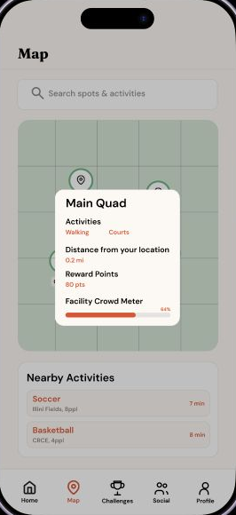

QUADGO · FIGMA PROTOTYPE
QuadGo
A fitness-app prototype designed to help UIUC students fit physical activity into busy schedules through flexible workout planning, campus activity discovery, and social motivation.
- My role
- UI/UX design, prototyping & user evaluation
- Context
- Academic team project · UIUC students
- Deliverable
- Interactive Figma prototype
Try the Figma prototype ↗ (opens in a new tab)


Home, campus activity discovery, and a sample workout plan. QuadGo is a design prototype; the activity totals, crowd levels, and rewards shown are demonstration content.
My contribution
I worked with Dhruv Sawhney, Colin Roland, and Kaushik Setty on a four-person team. I designed and built the base Figma interface and interactive prototype, then implemented refinements informed by user feedback and my teammates’ suggestions.
I also contributed to the comparative study design, evaluation setup, and analysis of participant ratings and feedback. My portion of the final evaluation involved three participants. Research, feature direction, and later refinements were collaborative; Dhruv also implemented updates following the latest evaluation.
Making room for exercise
QuadGo began as a fitness-tracking concept for UIUC students. Our early research pointed to a broader problem: wanting to exercise did not necessarily mean students had the time, motivation, or a convenient place to do it. Academic workloads and crowded facilities could make even a short workout feel difficult to arrange.
We shifted the design toward helping students decide what to do and where to go. The central question became: how could we make physical activity easier to fit into an ordinary student day?
What we took from the research
The team’s earlier surveys and interviews, reported as involving 18 participants, informed three priorities:
- Fit the available time. Offer short, flexible options rather than assuming everyone can commit to a long gym session.
- Make alternatives visible. Help students explore exercise locations beyond the campus fitness centers and see useful information before choosing.
- Support motivation. Explore streaks, rewards, and social participation as possible reasons to return, while keeping the practical planning tools easy to reach.
Three decisions that shaped the prototype
1. Ask one planning question at a time
The workout generator breaks planning into a short sequence: choose an available duration, choose indoors or outdoors, then see a suggested routine. This uses progressive disclosure—showing the choices needed at each step—to avoid asking someone to build an entire plan at once.
The sample result combines a warm-up, a cardio interval, and a cool down. It demonstrates the intended interaction; the Figma prototype does not generate personalized exercise recommendations.
- Time15, 30, 45, or 60 minutes
- LocationIndoors or outdoors
- PlanA suggested workout sequence
2. Put location details where the decision happens
The earlier map showed exercise locations, but its markers did not open details. We made locations interactive and brought activities, distance, reward points, and a crowd indicator into a location pop-up. Students could inspect an option directly from the map.

3. Keep a guided plan editable
A suggested routine should still leave room for personal preferences. We added editing and task creation to the daily planner, and made the plan easier to find from Home. Students could follow a recommendation or create their own workout tasks.
Streaks, badges, and points provided a second layer of encouragement around these practical tools. Social leaderboards offered friends, campus, and all-time views.
Evaluating the revised design
Our summative evaluation involved 12 college students with different exercise habits, with three participants recorded under each team member. This was a separate stage from the earlier needs-finding research.
Participants compared the earlier and revised designs, described their reactions aloud, and tried tasks involving the workout planner, leaderboards, and exercise-location map. We collected feedback and 1–10 ratings of the redesigned features, asking for improvement suggestions when ratings were below seven.
What participants told us
- Interactive cues generally matched expectations. Participants in my sessions described the flow as complete and appreciated that elements they expected to click actually worked.
- Location information helped with choosing a place. The team recorded positive feedback about the map pop-ups, including a participant who found the crowd indicator useful.
- Some controls still needed clearer signals. One participant was unsure whether leaderboard categories changed by tapping or swiping.
- Students wanted more flexibility and shared activity. Requests included joining challenges with friends, longer workout durations, and saving favorite locations.
The ratings and comments gave us direction for refinement. They describe participants’ responses to a prototype, rather than measured improvements in fitness, retention, or long-term exercise habits.
Turning feedback into revisions
The final report records another round of changes after the evaluation:
- More control in the guided flow. Back navigation lets users recover from a mistaken choice, and clearer visual treatment helps explain the sequence.
- More context on the map. A current-location marker helps orient users among the exercise locations.
- More ways to participate. Group challenges extend the social concept beyond comparing leaderboard positions.
- More visible goals. Unearned badges and point incentives for the daily plan show what users can work toward.
Other requests, such as favorite locations and workout options longer than an hour, remained opportunities for further exploration.
What we delivered
We delivered an interactive mobile-app prototype connecting a daily activity overview, workout planning, campus location discovery, challenges, and social progress. The work moved from a tracking concept toward a more practical sequence: find an option, make a plan, and see a reason to return.
For a quick walkthrough, start on Home, select the smart workout generator, choose 15 minutes and Indoors, and review the sample plan. Then explore Map and open a location to see its details.
What I learned
The most useful feedback came from watching people interpret the interface. A control that felt obvious to our team could still leave a participant wondering whether to tap or swipe. Those moments gave us specific changes to make, instead of relying only on our own familiarity with the design.
My main takeaway was to test earlier. A basic wireframe and a connected flow can already reveal problems with navigation and expectations; the interface does not have to be visually finished before that learning begins.
What I would test next
I would test the planning and map flows with clearer task-success and completion-time measures, and check that each prototype choice leads to a consistent result. Longer-term testing would then be needed to learn whether the planning tools, rewards, and social features actually help students maintain an exercise routine.
Team & tools
Gavin Wang, Dhruv Sawhney, Colin Roland, and Kaushik Setty. Designed and prototyped in Figma.
The team used Claude to generate some icon vectors and Figma Make to assist with additional leaderboard, task-editing, and guided-planning frames. These tools supported production alongside the team’s design, prototyping, and evaluation work.